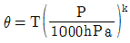
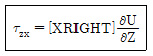
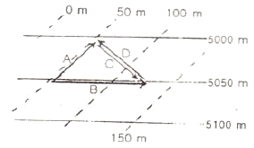
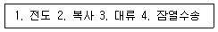
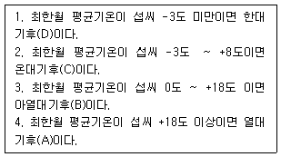
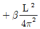
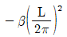
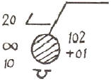

기상기사 (2008-03-02 기출문제)
1과목: 기상관측법
1. 해(달)무리는 어느 형의 구름에서 가장 잘 생기는가?
- 고층운(As)
- 권층운(Cs)
- 난층운(Ns)
- 적난운(Cb)
(정답률: 알수없음)

2. 기압의 보정순서로 가장 적합한 것은?
- 온도보정 → 기차보정 → 해면경정 → 중력보정
- 기차보정 → 온도보정 → 해면경정 → 중력보정
- 기차보정 → 온도보정 → 중력보정 → 해면경정
- 중력보정 → 기차보정 → 온도보정 → 해면경정
(정답률: 알수없음)
3. 기온의 일변화에 가장 큰 영향을 미치는 요소는?
- 습도
- 대기의 안정
- 대기의 청탁정도
- 태양고도
(정답률: 알수없음)
4. 500hPa 을 mmHg 단위로 환산하면?
- 300mmHg
- 325mmHg
- 350mmHg
- 375mmHg
(정답률: 알수없음)
5. 다음 중 풍속 측정의 원리로 이용되지 않는 것은?
- 풍배의 회전
- 피토관 (Pitot tube)
- 쌍금속 (bimetal)
- 초음파(ultrasonic)
(정답률: 알수없음)
6. 가조시수에 대한 설명 중 틀린 것은?
- 여름철에 길고 겨울철에 짧다.
- 여름철에 저위도지방에서 길고 고위도 지방에서 짧다.
- 위도와 계절에 의해 주로 결정된다.
- 산악 등 지형에 의한 보정은 하지 않는다.
(정답률: 알수없음)
7. 다음 중 빛의 회절에 의한 현상은?
- 무리(halo)
- 코로나(corona)
- 신기루(mirage)
- 무지개(rainbow)
(정답률: 알수없음)
8. 지상기상 실황(SYNOP)전보식 ff(풍속)의 설명 중 옳은 것은?
- 지정관측 시각의 순간 최대풍속
- 지정관측 시각 전 10분 간의 평균 풍속
- 지정관측 시각의 순간풍속
- 지정관측 시각 전 5분간의 평균풍속
(정답률: 알수없음)
9. 다음 중 직달 일사량을 관측할 수 있는 일사계는?
- Pyrheliometer
- Pyranometer
- Pyrgeometer
- Pyrradiometer
(정답률: 알수없음)
10. 다음 기상레이더 중 대기수상체에 의한 감쇄현상을 적게 받는 레이더는?
- K 밴드 레이더
- C 밴드 레이더
- X 밴드 레이더
- S 밴드 레이더
(정답률: 알수없음)
11. 아네로이드 기압계로 관측한 기압치에서 필요한 보정은?
- 기차보정, 중력보정
- 온도보정, 중력보정
- 기차보정, 해면경정
- 온도보정, 해면경정
(정답률: 알수없음)
12. 풍향에 관한 설명 중 틀린 것은?
- 풍향은 바람이 불고 있는 방향을 진방위에 의해 나타내는 것이 일반적이다.
- 풍향을 일반적으로 풍속이 강할 때에 자주 변한다.
- 풍향은 날씨변화와 밀접한 관계가 있다.
- 풍향의 급격한 변화는 전선의 통과를 나타낸다.
(정답률: 알수없음)
13. 다음 중 강수 측정용 기상레이더에 이용되는 파장대와 가장 거리가 먼 것은?
- 0.1cm
- 3cm
- 5.6cm
- 10cm
(정답률: 알수없음)
14. 다음 운량 관측에 관한 설명 중 틀린 것은?
- 목측으로 관측한다.
- 전천을 10으로 한다
- 구름의 농담과 구름의 높이에 관계가 있다.
- 안개가 6할이고 구름이 2할이면 운량은 8이다.
(정답률: 알수없음)
15. 층적운 형성과 관계된 설명 중 틀린 것은?
- 고적운의 운편이 커져서 생성된다.
- 난층운의 밑에서 형성된다.
- 적운의 윗부분이나 중간부분에 퍼져서 발생한다.
- 권적운의 운편이 발달하면서 발생된다.
(정답률: 알수없음)
16. “AIREP"으로 표시된 전문은 어디에서 관측보고하는 전문인가?
- 항해중인 선박에서 선장이나 선원이 관측보고하는 것
- 지상 관측소에서 관측보고 하는 것
- 고층 관측소에서 관측보고 하는 것
- 비행중인 항공기에서 조종사나 종사자가 관측보고 하는 것
(정답률: 알수없음)
17. 라디오존데 혹은 레윈존데에 의한 고층기상관측에서 1일 1회만 관측할 때 관측시간은?
- 0000UTC
- 0600UTC
- 1200UTC
- 1800UTC
(정답률: 알수없음)
18. 시정관측에 있어서 다음의 주의 사항 중 옳은 것은?
- 눈이 나쁜 관측자는 쌍안경으로 목표물을 확인하는 편이 좋다.
- 관측자는 지면에 선 채로 눈으로 관측하면 된다.
- 넓게 볼 수 있도록 높은 곳에서 관측하여야 한다.
- 밤에는 유리창을 통하여 관측하여도 무방하다.
(정답률: 알수없음)
19. 기상위성에서 적외선 사진에 가장 많이 이용되는 파장은?
- 약 0.1~0.6Mm
- 약 1.0~1.6Mm
- 약 10.0~12.0Mm
- 약 100.0~120.0Mm
(정답률: 알수없음)
20. 시정 관측시 사용하는 단위는?
- feet
- km
- yard
- cm
(정답률: 알수없음)
2과목: 대기열역학
21. 상당 온위와 기온고의 관계로 옳은 것은?
- 상당 온위가 기온보다 높다.
- 기온이 상당 온위보다 높다.
- 상당 온위와 기온은 같다.
- 서로 관계가 없다.
(정답률: 알수없음)
22. 대류권에서의 평균 기온 감율은 100m당 몇 ℃인가?
- 0.5℃
- 0.65℃
- 0.75℃
- 0.98℃
(정답률: 알수없음)
23. “대기가 작용하는 압력은 지표면에서 가장 크고 고도증가에 따라 감소된다”는 내용은 다음 중 무엇에 의한 것인가?
- 상태방정식
- 열역학 제1법칙
- 열역학 제2법칙
- 정역학 법칙
(정답률: 알수없음)
24. 적란운이 잘 생기는 대기성층의 관계는?
- 불안정일 때
- 절대안정일 때
- 역전층이 존재할 때
- 조건부 안정일 때
(정답률: 알수없음)
25. 다음 중 안정한 대기상태를 표시한 것은? (단, γd : 건조 단열감율, γw : 습윤 단열감율, γ: 실제 기온감율)
- γd＞γ
- γd <γ
- γd=γ
- γd<γ<γw
(정답률: 알수없음)
26. 대기 중에서 공기가 팽창하여 주위에 일을 할 때 일의 변화 dw는?
- dw ＞ 0
- dw ＜ 0
- dw = 0
- dw ≤ 0
(정답률: 알수없음)
27. 대기 중에서 내부에너지의 변화는 어떻게 표현되는가? (단, CvdT : 정적비열, T : 온도, Cp : 정압비열, p : 기압, V : 체적, α : 비적)
- CvdT
- CpdT
- pdV
- pdα
(정답률: 알수없음)
28. 모든 기체는 등온 등압에서 같은 부피 중에 들어있는 그 분자의 수가 같다는 것은?
- 아보가드로의 법칙
- 보일의 법칙
- 샤를의 법칙
- 달톤의 법칙
(정답률: 알수없음)
29. 다음 설명 중 틀린 것은?
- 등온위 과정은 등엔트로피 과정이다.
- 비가역과정은 가역과정보다 더 효율적이다.
- 단열과정은 등엔트로피 과정이다.
- 카르노 효율은 엔진에 흡수된 열량에 대한 엔진이 행한 기계적 일의 양의 비이다.
(정답률: 알수없음)
30. 비열에 대한 설명 중 틀린 것은?
- 단위질량에 열량이 가해져서 온도가 변화할 때의 온도에 한 열의 변화비율이 비열이다.
- 체적이 일정할 때의 비열을 정적비열이라고 한다.
- 기압이 일정할 때의 비열을 정압비열이라고 한다.
- 주어진 열량을 온도로 나눈 것, 즉 단위 온도에 대한 주어진 열량의 비를 비열이라고 한다.
(정답률: 알수없음)
31. 1000hPa에서 기온이 18℃인 공기의 혼합비가 6g/kg이다. 이 공기의 상대습도는 얼마인가? (단, 18℃에서의 공기의 포화 혼합비는 12.9g/kg이다.)
- 33.3%
- 46.5%
- 77.4%
- 86.1%
(정답률: 알수없음)
32. 중력이 5m/s2, 밀도가 0.5kg/m3, 고도가 3km인 임의의 균질 행성대기의 평균 지상 기압은?
- 75 hPa
- 300hPa
- 3000hPa
- 7500hPa
(정답률: 알수없음)
33. 포화혼합비 값에 대한 설명 중 맞는 것은?
- 압력이 감소할수록 작아진다.
- 온도가 감소할수록 커진다.
- 포화증기압이 증가할수록 커진다.
- 압력과 온도에 무관하다.
(정답률: 알수없음)
34. 다음 단열선도 중에서 Skew T-log P diagram과 가장 가까운 것은?
- Tephigram
- Skew-emagram
- Refsdal-diagram
- Stuve diagram
(정답률: 알수없음)
35. 대기 경계층에서 역전층이 잘 형성되는 층으로 짝지어진 것은?
- 지표층 - 전이층
- 지표층 - 혼합층
- 혼합층 - 구름층
- 에크만 층 - 구름층
(정답률: 알수없음)
36. 단열선도 분석을 통하여 알아낼 수 없는 것은?
- 대기안정도
- 층두께
- 대기열역학과정
- 빗방울의 성장률
(정답률: 알수없음)
37. 온위에 대한 설명 중 잘못된 것은? (단, θ는 온위, T는 기온, P는 기압, K는 R*/Cp이다.)
- 온위는 불포화단열과정에서 보존된다.
- 온위는 연직안정도를 판단한느데 유용하다.
- 온위는 어떤 공기덩이를 1000hPa까지 건조단열적으로 이동시켰을 때 그 공기덩이가 갖는 온도이다.

이다.
(정답률: 알수없음)
38. 태양에서 지구로 에너지가 전달되는 과정은?
- 복사전달
- 전도전달
- 대류전달
- 잠열전달
(정답률: 알수없음)
39. 다음 중 상대적으로 이상기체에 가까운 기체는?
- 점성이 큰 기체
- 밀도가 높은 기체
- 비체적이 큰 기체
- 온도가 낮은 기체
(정답률: 알수없음)
40. 다음 습도 용어에서 차원(dimension)이 있는 것은?

- 상대습도
- 혼합비
- 비습
- 절대습도
(정답률: 알수없음)
3과목: 대기운동학
41. 아래식에서 [X]속에 들어갈 물리적인 양의 차원은? (단, τzx는 Shearing Stress, U는 동서방향의 바람성분, Z는 높이를 나타내며, M은 질량, L은 길이, S는 시간, K는 온도의 차원을 나타낸다.)
- MKLS-2
- ML-1S-1
- ML2S-2
- MLS-1K
(정답률: 알수없음)
42. 정상적인 사이클론성 흐름에서 지균류와 경도류의 크기를 서로 비교해 보면?
- 지균류가 경도류보다 강하다.
- 지균류가 경도류보다 약하다.
- 지균류와 경도류는 서로 같다.
- 경우에 따라서 달라진다.
(정답률: 알수없음)
43. 잘 혼합된 행성경계층에 대한 설명 중 틀린 것은?
- 마찰력, 전향력, 기압경도력이 균형을 이루고 있다.
- 바람의 방향은 등압선과 교차하며, 저기압쪽으로 향하는 성분이 있다.
- 바람이 등압선과 이루는 각은 마찰력이 클수록 크다.
- 마찰력은 분자점성에 의한 것이다.
(정답률: 알수없음)
44. 다음 식 중 (x, y, θ)좌표계(Isentropic coordinates)에서 표시된 수평기압 경도력은? (단, ρ는 공기밀도, P는 기압, T는 기온, R은 기체상수, Cp는 정압비열, ø는 지오포텐셜을 표시한다.)
- -∇(RT+ø)
- -1/ρ∇P
- -∇(CpT+ø)
- -∇ø
(정답률: 알수없음)
45. 변형운동(Deformation)과 가장 관계가 깊은 기상현상은?
- 고기압의 발달
- 전선의 발달
- 저기압의 발달
- 편서풍의 발달
(정답률: 알수없음)
46. 다음 중 거칠기 길이(roughness length)가 가장 긴 것은?
- 경작지
- 모래 해변
- 대도시 주거지
- 툰드라 지대
(정답률: 알수없음)
47. 공기밀도가 1.2kg∙m-3 이고 지표 마찰 속도가 0.5m∙s-1인 경우, 지표 응력(stress)은 얼마인가? (단, 단위는 kg∙gm-1∙s-2임)
- 0.1
- 0.2
- 0.3
- 0.4
(정답률: 알수없음)
48. 바다와 산으로부터 멀리 떨어진 외딴 평지에 활주로가 놓여있다. 맑은 날의 경우, 이 활주로에서 언제 바람이 가장 강하게 불겠는가?
- 아침
- 점심
- 저녁
- 새벽
(정답률: 알수없음)
49. 대규모 운동인 경우의 로스비 수의 크기는?
- 0.1
- 0.5
- 1.0
- 1.5
(정답률: 알수없음)
50. 1월에 각 지역별 월평균 지상기압 분포로 맞는 것은?
- 호주의 고기압
- 북미 대륙의 저기압
- 아이슬란드의 저기압
- 알류산 열도의 고기압
(정답률: 알수없음)
51. 다음 중 선형풍 설명으로 틀린것은?
- 이 현상의 로스비 수가 약 0.1이다.
- 기압경도력과 원심력이 균형을 이루며 부는 바람이다.
- 시계방향으로 불 수도 있고, 반시계방향으로 불 수도 있다.
- 토네이도가 이 현상에 속한다.
(정답률: 알수없음)
52. 말 위도(horse latitude)는 무엇의 결과인가?
- 극 전선대
- 극 고기압
- 열대 수렴대
- 아열대 고기압
(정답률: 알수없음)
53. 남북방향의 온도경도가 강한 곳의 상층에 제트류가 있을 것으로 추측할 수 있다. 이 근거를 설명할 때 필요 하지 않은 것은?
- 정역학 평형
- 이상기체법칙
- 지균풍관계
- 대기안정도
(정답률: 알수없음)
54. 힘의 균형으로 정의되는 바람이 아닌것은?
- 온도풍
- 지균풍
- 경도풍
- 마찰풍
(정답률: 알수없음)
55. 온위가 고도에 관계없이 거의 일정한 층은?
- 혼합층
- 에크만 층
- 접지경계층
- 내부경계층
(정답률: 알수없음)
56. 종관계에서 깊이 규모의 대푯값은? (단, 단위는 km)
- 1
- 5
- 10
- 15
(정답률: 알수없음)
57. 라니냐와 관련된 사항 중 맞는 것은?
- 무역풍의 약화와 관련되어 있다.
- 서태평양에서의 기압이 높아진다.
- 동태평양에서의 대류활동이 강화된다.
- 서태평양의 수온이 평년보다 증가한다.
(정답률: 알수없음)
58. 다음 그림에서 온도풍(thermal wind)은?

- A
- B
- C
- D
(정답률: 알수없음)
59. 다음 중 Reynolds number의 정의는? (U, L은 각각 수평속도 및 거리규모, v는 운동마찰계수, g는 중력)
- UL/v
- U2/gL
- v/UL
- gL/U2
(정답률: 알수없음)
60. 다음 중 전향력을 바르게 설명한 것은?
- 정지한 물체에는 작용하지 않는다.
- 극에서는 그 값이 0이 된다.
- 물체의 속도가 빠를수록 그 크기는 작아진다.
- 양반구 모두 운동하는 물체에 직각 오른쪽으로 작용한다.
(정답률: 알수없음)
4과목: 기후학
61. 고생대 지질시대의 기후변동으로 인해 전 세계적으로 고온다습한 현상이 있었고, 후기에는 남반구에 극한을 초래했던 시기는?
- 캄브리아기
- 실루리아기
- 페름기
- 석탄기
(정답률: 알수없음)
62. 기온의 연변화에서 최고, 최저가 각각 2회 나타나는 지역은?
- 적도지역
- 사막지역
- 다우지역
- 계절풍지역
(정답률: 알수없음)
63. 동기후학(dynamic climatology)에서 다루는 내용과 가장 거리가 먼 것은?
- 저기압
- 기단
- 전선
- 평균기온
(정답률: 알수없음)
64. 유럽 서해안이 같은 위도의 아시아 동해안보다 온화한 기후를 갖는 것은 무엇 때문인가?
- 멕시코 만류
- 무역풍
- 제트기류
- 계절풍
(정답률: 알수없음)
65. 쾨펜의 기후구분에 가장 중요하게 사용된 기후요소는?
- 기온과 강수
- 기압과 기온
- 증발량과 강수량
- 습도와 기압
(정답률: 알수없음)
66. 기후변화의 원인 중 천문학적 원인에 속하는 것은?
- 조석
- 육지의 변화
- 화산활동
- 공전궤도의 이심률 변화
(정답률: 알수없음)
67. 클라이모그래프는 어느 요소들의 월평균 값을 이용한 그래프인가?
- 기온과 기압
- 기온과 바람
- 기온과 습도
- 기온과 일사량
(정답률: 알수없음)
68. 지면에서보다 수면에서 온도의 일교차가 작은 이유에 관한 설명 중 틀린 것은?
- 물은 복사열이 잘 투과된다.
- 물은 토양보다 비열이 크다.
- 수면에서는 열의 일부가 증발에 사용된다.
- 수면은 복사열의 흡수력이 강하다.
(정답률: 알수없음)
69. 보웬 비에 대한 다음 설명 중 맞는 것은?
- 적도에서 작고, 고위도로 갈수록 크진다.
- 고위도에서 작고, 저위도로 갈수록 커진다.
- 위도에 상관없이 거의 일정하다.
- 중위도에서 가장 작고 고위도와 적도에서 크다.
(정답률: 알수없음)
70. 1월과 7월의 기온특색에 대한 설명 중 틀린 것은?
- 일반적으로 양반구가 다같이 적도에서 극으로 갈수록 기온이 낮아진다.
- 대륙에서는 여름에 심한 고온지역이 나타나고 겨울에는 심한 저온지역이 나타난다.
- 같은 위도권에서는 남반구보다 북반구가 여름과 겨울의 차가 크다.
- 남반구가 북반구보다 기온의 지역적 차가 크고 특히 여름에 심하다.
(정답률: 알수없음)
71. 고산기후의 특징과 가장 거리가 먼 것은?
- 고 고도이므로 일사가 강하다
- 기온의 일교차가 크다.
- 야간에 서리가 보통 내린다.
- 열대지방의 경우 기온의 연교차가 일교차보다 크다.
(정답률: 알수없음)
72. 기단의 표시 중 기본 분류기호 다음에 오는 w와 k는 기단의 어떤 성질을 나타내기 위한 기호인가?
- 건조한 기단과 다습한 기단
- 해양성 기단과 대륙성 기단
- 지표면보다 따뜻한 기단과 한랭한 기단
- 이동성 기단과 정체성 기단
(정답률: 알수없음)
73. 태양상수에 대한 설명 중 틀린 것은?
- 지구와 태양간의 평균거리를 취한다.
- 약 1367W/m2의 값을 가진다.
- 태양광선에 수직인 면이 받는 복사량이다.
- 산란광과 반사광을 포함시킨다.
(정답률: 알수없음)
74. 쾨펜의 기후 구분 중 극지방은 어느 것에 해당되는가?

- Af
- BS
- Cw
- EF
(정답률: 알수없음)
75. 동안기후와 서안기후의 특성 설명 중 틀린것은?
- 대륙의 동쪽 해안에 주로 동안기후가 나타난다.
- 우리나라 동해안은 동안기후, 서해안은 전형적인 서안기후이다.
- 서안기후는 동안기후에 비해 따뜻하다.
- 동안기후는 계절풍기후, 서안기후는 편서풍기후이다.
(정답률: 알수없음)
76. 온도가 낮아질수록 방출하는 복사의 최대 에너지 파장이 점점 길어짐을 나타내는 법칙은?
- Reyleigh의 법칙
- Planck의 법칙
- Stefan-Boltzman법칙
- Wien의 법칙
(정답률: 알수없음)
77. 도시기후를 설명하는 것 중 옳은 것은?
- 일사량은 대체로 도심이 주변보다 적다.
- 기온은 대체로 도심이 주변보다 낮다.
- 절대습도는 대체로 도심이 주변보다 높다.
- 강수량은 대체로 도심이 주변보다 적다.
(정답률: 알수없음)
78. 기후학에서 다루는 열 전달의 과정들을 모두 모은 것은?
- 1, 2, 3
- 2, 3, 4
- 1, 3, 4
- 1, 2, 3, 4
(정답률: 알수없음)
79. 쾨펜기후분류에서 영구적으로 수목이 자랄만큼 온도가 높고 강수량이 많으면 수목기후로 분류하고, 다음 단계로 온도변화를 고려한다. 다음 보기 중 옳은 것만 모은 것은?

- 1, 2
- 2, 3
- 3, 4
- 1, 4
(정답률: 알수없음)
80. 기온 등과 같은 지구의 기후가 최적의 환경상태로 유지되는 것은 생물권의 능동적인 작용에 의한 것이라고 주장하는 이론은?
- 가이아 이론
- Hutton이론
- Daisy world이론
- Feedback이론
(정답률: 알수없음)
5과목: 일기분석 및 예보론
81. 지상 기상 전문에서 노점온도가 영하일 때 노점온도를 표시하는 방법은?
- 노점온도 값 앞에 -부호를 붙인다.
- 노점온도 값에 “( )”를 붙인다.
- 노점온도 값 앞에 1을 붙인다.
- 노점온도 값 앞에 0을 붙인다.
(정답률: 알수없음)
82. cyclolysis란 말은?
- 저기압의 정지상태를 말한다.
- 온대성 저기압을 말한다.
- 저기압의 소멸과정을 말한다.
- 저기압의 발달과정을 말한다.
(정답률: 알수없음)
83. 다음 불연속선 중에서 가장 흔히 뇌우와 돌풍을 동반한 것은?
- 열대전선
- 온난전선
- 정체전선
- 한랭전선
(정답률: 알수없음)
84. 다음 중 대기단열선도(Skew T-log P diagram)에 포함되지 않는 선은?
- 등온선
- 건조단열선
- 포화 혼합비선
- 상대습도선
(정답률: 알수없음)
85. 불포화 공기에서 성립하는 관계는? (단, Td : 노점온도, Tw : 습구온도, T : 기온)
- Td < Tw < T
- T < Tw < Td
- Td < T < Tw
- Tw < Td < T
(정답률: 알수없음)
86. 표준대기에 있어서의 850hPa등압면 고도는 약 몇 m인가?
- 1500m
- 3000m
- 5600m
- 9000m
(정답률: 알수없음)
87. 이류도에 관한 설명 중 틀린 것은?
- 중간층의 기류가 층후값이 큰 쪽에서 작은 쪽으로 횡단 할 때 온난이류라 한다.
- 온난이류는 적색으로 표시한다.
- 기류가 층후선과 평행이면 중립이류라 한다.
- 한랭이류는 표시하지 않는다.
(정답률: 알수없음)
88. 전선의 특징은?
- 솔레노이드가 작다.
- 경압성이 크다.
- 기온경도가 적다.
- 순아성이 크다.
(정답률: 알수없음)
89. 다음 일기도 중에서 대류권 중간층을 분석하기에 가장 적합한 것은?
- 850hPa
- 700hPa
- 500hPa
- 200hPa
(정답률: 알수없음)
90. 정지대기(일반류의 속도=0)에서 대규모 요란의 위상속도는?
- 0
- L/π2


(정답률: 알수없음)
91. 지상일기도에서 등압선이 조밀한 경우에 일반적으로 예상되는 현상은?
- 바람이 강하게 분다.
- 바다가 잔잔하다.
- 안개가 짙게 낀다.
- 기온이 급히 상승한다.
(정답률: 알수없음)
92. 다음 중 태풍의 에너지 원천은?
- 하강기류
- 수증기의 응결잠열
- 복사열
- 해수의 기화열
(정답률: 알수없음)
93. 다음 중 대기의 운동을 단열과정으로 취급할 수 있는 요인으로서 가장 적합한 것은?
- 대기의 온실효과
- 공기는 불량도체
- 대기는 단 시간내에 태양 복사를 잘 흡수함
- 태양복사의 산란
(정답률: 알수없음)
94. 우리나라에서 널리쓰고 있는 단열선도는?
- Tephigram
- Skew T-log P diagram
- Emagram
- Stuve diagram
(정답률: 알수없음)
95. 지상일기도 기입 모델에서 다음 그림과 같은 경우에 해당되지 않는 상황은?

- 하늘 상태는 흐림이다.
- 비가 오고 있다.
- 하층운이 있다.
- 현재 기압이 1010.2hPa이다.
(정답률: 알수없음)
96. 300hPa면의 고도는 700hPa고도의 몇 배가 되는가?
- 2배
- 3배
- 4배
- 5배
(정답률: 알수없음)
97. 태풍의 구조에 대한 다음 설명 중 틀린 것은?
- 등압선은 거의 원형이다.
- 기압경도는 중심으로 갈수록 작아진다.
- 구름은 나선상으로 중심을 둘러싸고 있다.
- 강한 비바람을 동반한다.
(정답률: 알수없음)
98. 태풍의 진로에 관한 설명 중 틀린것은?
- 북태평양 고기압을 오른쪽에 두고, 그 주변을 딸 움직인다.
- 기압 하강이 큰 쪽을 향해 움직인다.
- 상층에 기압골이 있으면 이 기압골을 타고 전향한다.
- 온도 경도가 작은쪽으로 움직인다.
(정답률: 알수없음)
99. 건조주의보를 발표할 때 고려하는 기상요소와 가장 거리가 먼 것은?
- 우세 풍향
- 최대순간 풍속
- 실효습도
- 최소 습도
(정답률: 알수없음)
100. 지속적인 강수현상을 가장 흔히 동반하는 전선은?
- 한랭전선
- 온난전선
- 정체전선
- 폐색전선
(정답률: 알수없음)